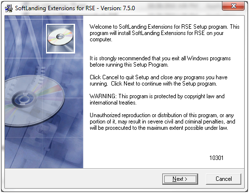
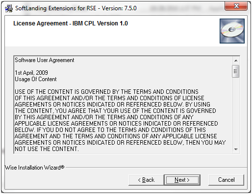
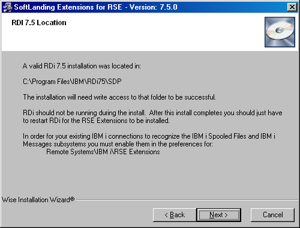
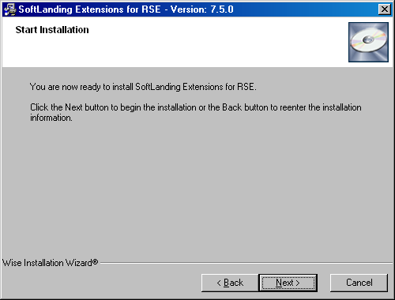
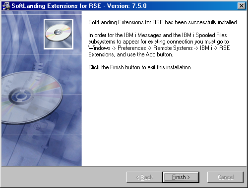

Installation/Update Instructions
These instructions guide you through the RSE Extensions installation and update process in RDi 7.5
If you have existing IBM i connections defined you must complete this installation routine, then manually define the subsystems to your connections. You do this by accessing the RSE Extension Preferences from Window -> Preferences -> Remote Systems -> IBM i -> RSE Extensions. There you will find Add buttons for both the Spooled Files subsystem and the Messages subsystem.
Installing the RSE Extensions
Download
Download the installer. The latest version is always available at http://support.softlanding.com/opensource/rse_extensions_75.exe. Once you have it downloaded, double click to launch the installer.
Step 1:
The installer is a standard Windows install wizard; the screens are self-explanatory.
Step 2:
This screen shows the user agreement. As the heading indicates, the RSE Extensions are available under the terms of the IBM CPL v1.0, a fairly standard open source license agreement -- the same agreement under which Eclipse was originally licensed. (Eclipse now has its own version, called the Eclipse Public License, or EPL.)
Step 3:
Confirm the installation directory. It doesn't matter what directory you install into, as long as it is a new directory. Do not install the RSE Extensions into one of the RDi directories.

Step 4:
This screen just confirms that the installer detects RDi 7.5 on your computer. If the installer does not find it, you would see a different screen (not shown).
Step 5:
Another confirmation screen.
Step 6:
The final screen, which appears after the install has completed.
Your IDE may then require a restart for the plug-ins to become available.
Post-installation instructions for RDi 7.5
RDi 7.5 will not add the new subsystems to existing connections. You must do this manually
- Start your IDE and go to: Windows -> Preferences ->
- Once there, select Remote Systems -> IBM i -> RSE Extensions
- Select the appropriate Add button for each subsystem
After the installer completes
When the installer has finished, restart RDi. Read the overview and, if you want to participate in the development of the RSE Extensions, the development instructions.
Updating the RSE Extensions
RDi 7.5 has a feature in the Preferences that you can set to automatically check for updates. You can use this feature to update your RSE Extensions, as long as you are not behind a proxy server that does not allow this activity. You can check for updates manually by choosing Software Updates from the Help menu. Follow the instructions provided by the wizard.
If you are behind a proxy server that will not allow RDi's Updates feature to work, then you can install updates by downloading and installing the latest version, as described above. When you do this, the installer detects that the RSE Extensions are already installed, and skips most of the wizard screens.